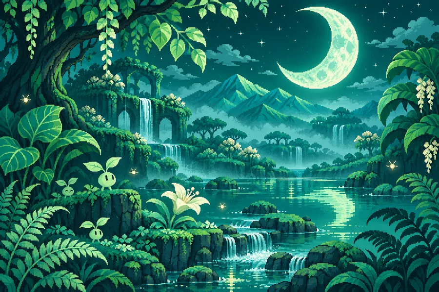

The greenhouse after midnight

At the garden gate, a silver seed is waiting. This first Moon Garden edition follows the night keeper between the glasshouse and the lily pond.

At the garden gate, a silver seed is waiting. This first Moon Garden edition follows the night keeper between the glasshouse and the lily pond.